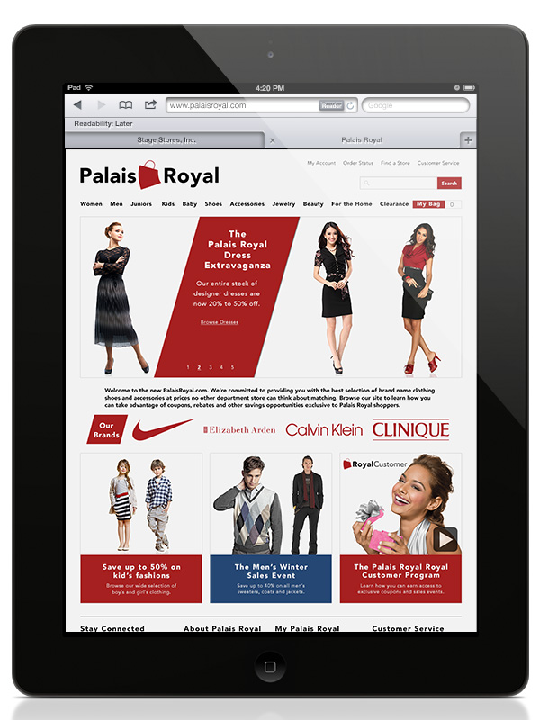
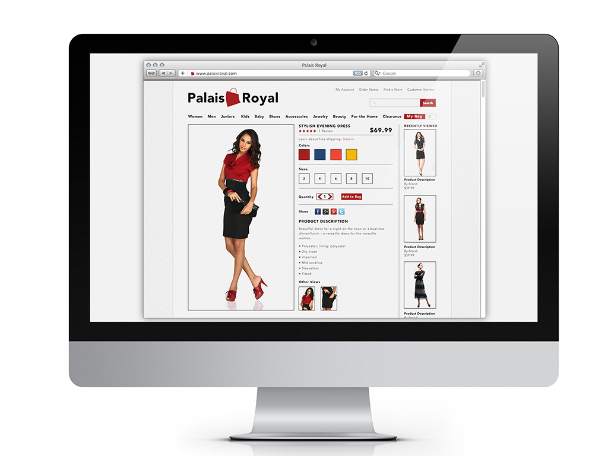
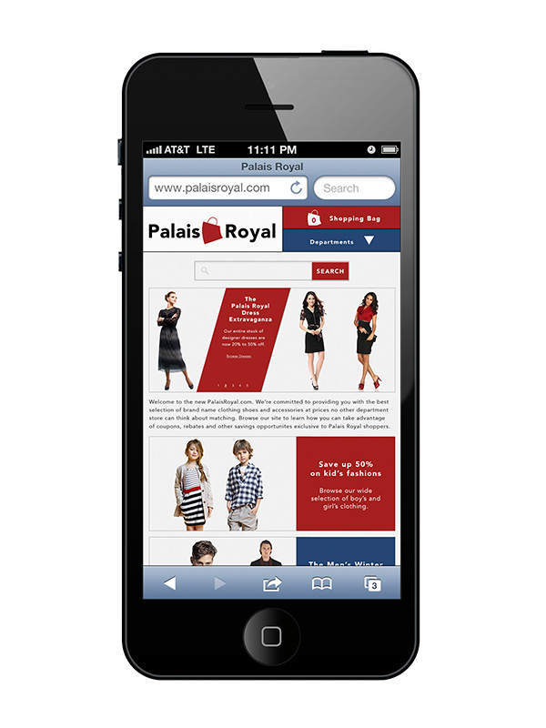
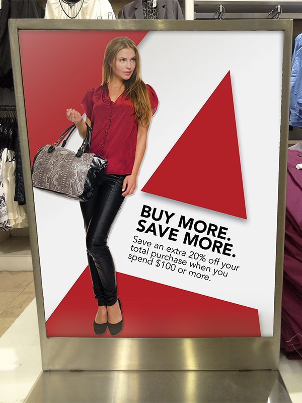
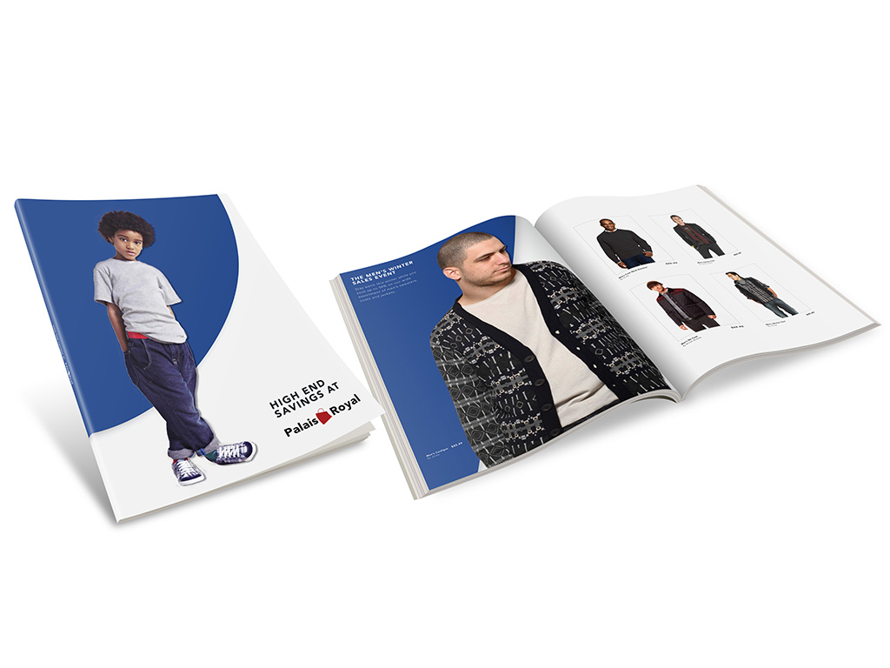
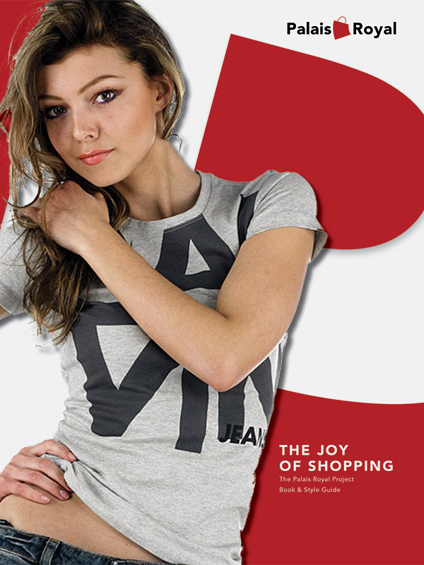
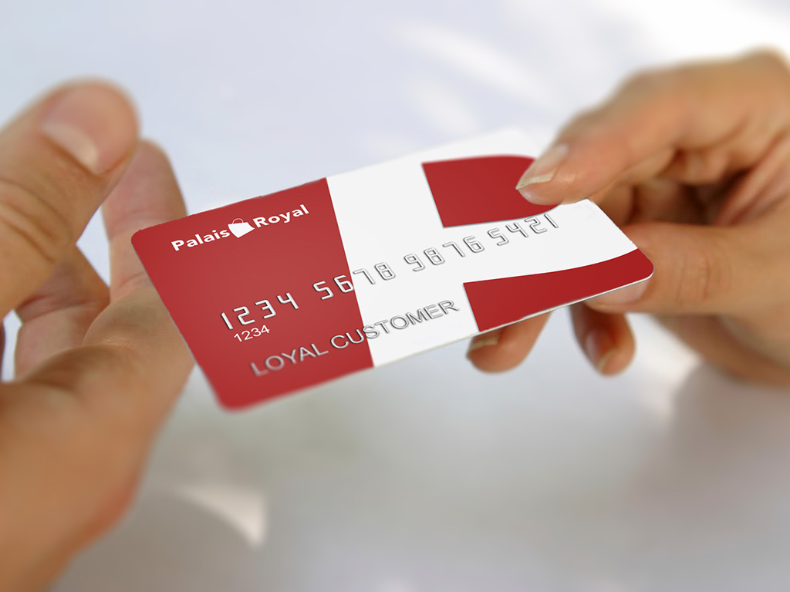
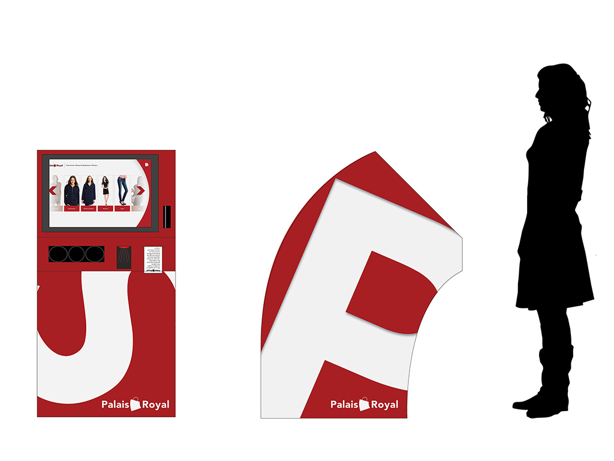

Palais Royal Rebrand Project
During the one-year long Master of Fine Arts program at Full Sail University, students are tasked with rebranding an existing brand from start to finish. Students are expected to research their company, its competitors and its industry. From there, students develop several possible directions to take the brand before picking one and further developing brand collateral.
The company I picked was Palais Royal, a department store chain located in the Houston-area. Palais Royal is part of Stage Stores, Inc., a nationwide chain of department stores mostly located in smaller communities about 30 minutes away from major metropolitan areas. The challenge was developing a brand that would help Palais Royal stand out in a much more competitive Houston market.
During the one-year program, I researched Palais Royal’s history and the history of department stores in general. I learned about the challenges facing the industry in the internet age. I also learned more about the competition and how Palais Royal might stand out.
With this new information, I developed three potential brand themes: one focusing on family, the other on style and the final one on the joy of shopping. After reading market research, I decided to expand on the joy of shopping theme.

Below is a copy of my brand research and style guide. Inside you will find selections from my research paper which outlines the challenges facing Palais Royal and how it can differentiate itself in a very competitive market. You will also find a general overview of the brand’s visual identity and sample uses.
The following three videos are dynamic moodboards that I developed for each of my possible brand themes. The first focuses on family.
The next video focuses on fashion.
The final video focuses on the joy of shopping.
After deciding that the joy of shopping was the theme I wanted to pursue, I began the process of refining my ideas. I tweaked the logo. I developed sample uses for the logo: a credit card, a shopping bag, store signage. I developed a design for a store kiosk that would allow customers access to wider selection of merchandise. I also developed web designs.
       The following video is a reflection on my time in the Full Sail Digital Media Design program.